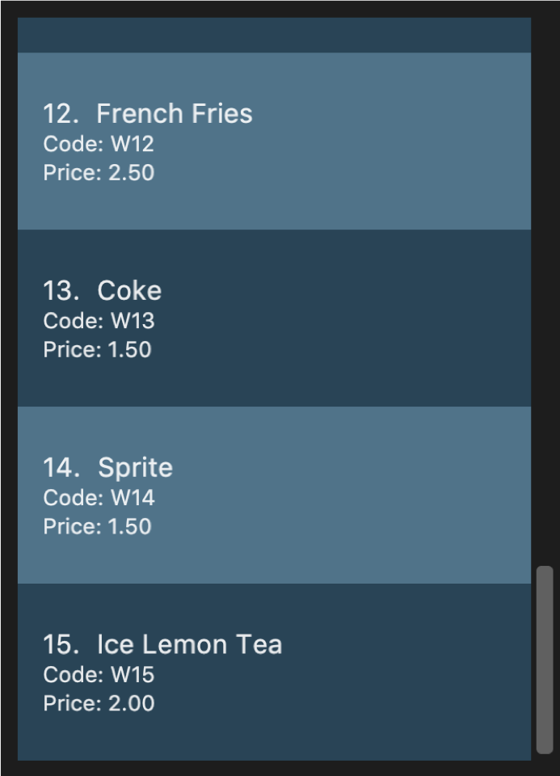
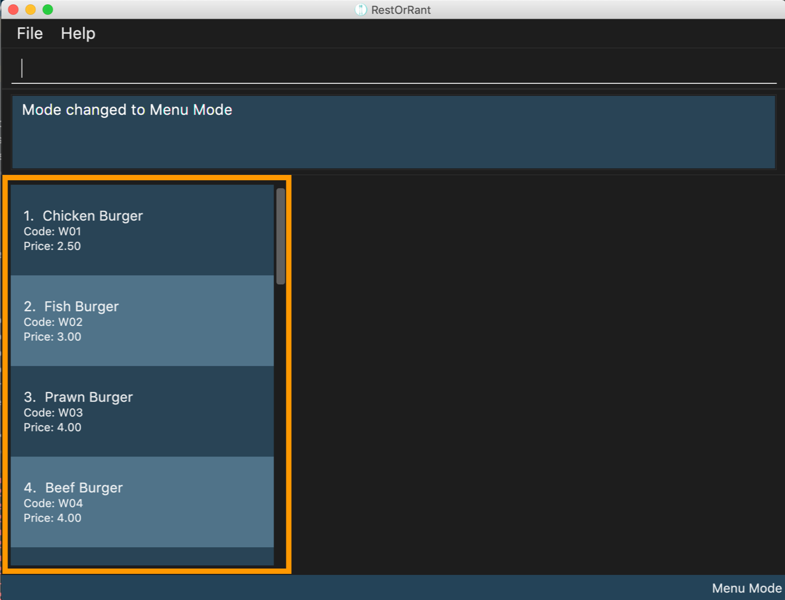

Overview
RestOrRant is a Command Line Interface (CLI) desktop restaurant management application that allows restaurant managers, waiters and cashiers to perform restaurant front-end operations more efficiently. With RestOrRant, restaurant managers can easily manage table allocation, handle orders, track menu item availability and check restaurant statistics. RestOrRant was developed by a team of four, including myself, as part of our CS2103T Software Engineering module project, where we were given an addressbook application and tasked to enhance or morph it.
We decided to split the implementation of the features according to Menu, Orders, Table and Statistics. My role was to implement the menu feature end-to-end (across Ui, Model, Logic and Storage components). The following sections elaborate on my enhancements as well as the relevant updates to the User Guide and Developer Guide to reflect these enhancements.
The table below specifies the different symbols and formatting used in this Portfolio.
|
A grey highlight with monospaced font indicates a command that can be typed into the command box of the application. |
name |
A blue highlight with monospaced font indicates a reference to the codebase. This could be a component, class, method, attribute or file name. |
|
A green tick indicates the expected result that you should see after executing a command in the application. |
|
A lightbulb indicates tips and tricks that might be useful to the user. |
|
A blue information symbol indicates additional information for that section that is good to know. |
|
A red exclamation mark symbol indicates important pointers to take note. |
Summary of contributions
This section contains a summary of my contributions to the code, documentation, and other minor enhancements made to RestOrRant.
-
Major enhancement: I added the ability to add menu items to, delete menu items from and clear the menu.
-
What it does:
-
addToMenu: TheaddToMenucommand allows the user to add a menu item to the menu. The menu item must be specified with an item code, name and price using labels such asc/for code,n/for name andp/for price. For example,addToMenu c/W09 n/Chicken Wings p/3.20would add the MenuItem with Name Chicken Wings with Code W09 and Price 3.20 to the Menu. -
deleteFromMenu: ThedeleteFromMenucommand allows the user to delete a MenuItem from the Menu, but here the MenuItem is only identified by its Code. For example,deleteFromMenu W09would delete the MenuItem with the Code W09 from the Menu. -
clearMenu: TheclearMenucommand allows the user to remove all MenuItem from the Menu.
-
-
Justification: These commands in the menu feature would allow restaurant managers to edit the menu according to the ingredients they have available each day. The menu is also stored internally, and thus there would be no need to re-enter all the menu items but instead only add or remove a few menu items each day.
-
Highlights: The format of labelling for the
addToMenucommand was used for ease of distinguishing the Name, Code and Price of the menu items. With the labels, users can key in any permutation of the attributes and the command would work as intended. However, the labelling approach was not needed for thedeleteFromMenucommand as the Code is the only input needed. -
Credits: The addressbook given to us had originally used the labelling format for adding people to the addressbook, which is where I got my inspiration from for the
addToMenucommand.
-
-
Minor enhancement: I added the ability to store the quantity ordered for each MenuItem in the Menu, and update the quantity ordered every time the bill is called, (implementation of
updateMenuItemQuantitymethod).-
What it does: When a MenuItem is added for the first time, the quantity is automatically set to zero. It then updates from zero every time the orders are confirmed (i.e. when the bill is called).
-
Justification: This enhancement is to aid the implementation of finding the most popular item in the Menu, by retrieving the MenuItem with the largest number of quantity ordered.
-
-
Code contributed: [Project Code Dashboard]
Other contributions:
-
Project Management:
-
There were a total of 3 releases, from version 1.2.1 to 1.4 and I managed all releases on GitHub.
-
I was also in charge of scheduling and tracking, and managed the tracking of issues and milestones on GitHub.
-
-
Documentation:
-
Community:
Contributions to the User Guide
We had to make changes to the original addressbook User Guide with the instructions relevant to RestOrRant. The following is an excerpt from our RestOrRant User Guide to show the updates that I have made for the menu features.
Menu Mode
In Menu Mode, you can track all updates to the menu, and RestOrRant will display the current items on the menu.

This mode only uses the side panel to avoid any confusion and for ease of use. The function is as follows:
-
Menu Panel: This panel displays the currently available items and their details on the menu.
Here are the commands that you can use in this mode to efficiently handle the menu in your restaurant.
Adding menu items to the menu : addToMenu
If your restaurant has a new dish you would like to make available for your customers, this command allows you to add that item to the menu by specifying the item code, name and price.
Order of the input parameters does not matter (i.e. any permutation of c/ITEM_CODE n/ITEM_NAME p/ITEM_PRICE can be
keyed in and the command will work as intended).
|
| RestOrRant does not allow you to add two items with the same item code as they are considered to be the same item. Make sure to have different item codes for all your available dishes! |
|
You will see a success message in the Results Display and the updated menu with the new item will be displayed in the Menu Panel. |
For example, the menu initially has 15 items as shown below.

Suppose you would like to add a Chocolate Ice Cream to the menu. After executing The Menu Panel will also be updated and you will now see 16 items displayed. As seen in the image below, a new 16th item has been added to the menu. 
|
Deleting menu items from the menu : deleteFromMenu
Suppose you now decide you no longer want to sell a particular dish, and would like to make it unavailable for customers. You can do so by specifying the item code of the item you wish to remove.
| The restaurant must be empty (there should not be any occupied tables). |
You can only delete item codes that already exist in the menu. You can add items to the menu using the addToMenu command.
|
| Deleting an item from the menu would also erase the order statistics associated with that item, and this item will not show up on the Menu Panels in all modes. If you choose to add the same item to the menu again, the order statistics for the item will be reset to 0. |
|
You will see a success message in the Results Display and the displayed menu on the Menu Panel would have the specified item removed. |
For example, the menu initially has a few items as shown below. 
Suppose you would like to delete the Beef Burger from the menu. After executing 
The Menu Panel will also be updated and you will no longer see the Beef Burger, as seen in the image below. 
|
Clearing all the items in the menu : clearMenu
This command allows you to clear all the items from the menu, if you ever need to start afresh.
|
The menu must not be empty (one or more items should exist in the menu). The restaurant must be empty (there should not be any occupied tables). |
| This command is irreversible and will not save the menu under RestOrRant’s statistics. |
|
You will see a success message in the Results Display and the Menu Panel will be empty. |
For example, the menu initially has a few items as shown below.

After executing 
|
Changing an item’s availability : toggleAvailability (Coming in v2.0)
This command allows you to change an item’s availability by specifying the item code. Calling this command on an available item would mark the item as unavailable, whereas calling this command on an unavailable item would mark it as available again.
| All added menu items are available by default. |
| The specified item code should exist in the menu. |
|
You will see a success message in the Results Display and the background of the menu item would turn dark. |
Let’s say that the Lobster Burger has just become sold out. |
Contributions to the Developer Guide
We also had to make changes to the original addressbook Developer Guide as our implementation had major changes in the Ui, Logic, Model and Storage components. The following is an excerpt from our RestOrRant Developer Guide to show the updates that I have made for the menu features as well as the storage component.
In the following snippet, I explained the classes in the Model component that are used in the Menu feature. |
Classes for Menu feature in Model
The Menu feature was implemented with the introduction of a new set of classes to Model. A new Menu class encapsulates all the methods and classes related to this feature. It also contains a listener that is used to update the storage when any modification is made to the orders. The Menu object is stored in RestOrRant and it exposes a read-only interface ReadOnlyMenu to allow the other components to retrieve menu-related information while maintaining data integrity.
Menu contains a UniqueMenuItemList, which contains a list of all the items in the menu, represented by MenuItem objects. Each MenuItem object consists of 3 objects:
-
Name indicates the item name and is used for display in the UI
-
Code indicates the item code and is used to identify the menu item
-
Price indicates the item price and is used for display in the UI and calculation of bill
MenuItem objects are uniquely identified by Code. As such, each menu item should have distinct item codes.
The Menu Class Diagram below shows the relationship between the classes.
The following demonstrates my technical writing skills for my implementation of the |
Adding to menu
The user may want to add new menu items to the menu and this can be done with the addToMenu command.
Current Implementation
The menu items in the menu are stored as a list. Adding a new menu item to the menu is done by adding to the existing list.
The command is read as a text string from the command box in the UI and then is executed by calling MainWindow#executeCommand(), which passes this string to the Logic component by calling Logic#execute().
The sequence diagram for interactions between the Logic, Model and Storage components when a user executes the addToMenu command is shown below.

addToMenu commandThe Logic#execute() method then creates a command from the text string input by parsing the string to identify the command word (done by the RestOrRantParser#parse() method) and other parameters, in this case the attributes of the MenuItem (done by the AddToMenuCommandParser#parse() method, omitted from the sequence diagram). After parsing, the text string is then converted to Name, Code, and Price and a new MenuItem is created with these attributes and then passed to Model component.
In the Model component, firstly the validity of the Name, Code and Price of the MenuItem is checked. The three attributes must follow the specified format for them to be valid. The MenuItem is only added to the UniqueMenuItemList after ensuring that the same menu item does not already exist in the list. For this to be true, the new menu item should not have the same Code as any other item in the list.
After adding to the list in the Model component, the Menu#indicateModified() method is called, which then triggers the Logic component to save the state of the menu, by calling Storage#saveMenu().
The User Interface also updated by adding the new menu item to the list panel.
| This action can only be done in Menu Mode. If not in Menu Mode currently, users can first change mode by switching over to Menu Mode. |
Design Considerations
| Aspect | Alternative 1 | Alternative 2 |
|---|---|---|
Saving changes from addition of menu items |
Save only the menu, using the Menu#indicateModified() and Storage#saveMenu() methods. We decided to choose this option because we realise that there would be bigger performance issues such as lagging in the long run if we were to save every instance of the restaurant for every update to each feature. |
Save the whole restaurant instance, by just having two methods (RestOrRant#indicateModified() and Storage#saveRestOrRant()) overall. |
In the following excerpt, I explained my implementation of the |
Deleting from menu
The user may want to remove a menu item from the menu and this can be done using the deleteFromMenu command.
Current Implementation
As mentioned above, deleting a menu item from the menu is done by removing from the existing list.
The interactions between all four components when a user executes the deleteFromMenu command is very similar to the interactions when adding to menu:
One specific difference is that deleting from menu only requires item Code, whereas adding to menu requires Name, Code and Price. For this reason, we have decided to not use any prefixes (such as c/ to denote item code).
After parsing the input text string by the RestOrRantParser#parse() method, the DeleteFromMenuCommand object is created.
DeleteFromMenuCommand then makes use of the method Menu#getItemFromCode() to retrieve the menu item from the item Code input. The code snippet of the method is shown below:
public Optional<MenuItem> getItemFromCode(Code code) {
Iterator<MenuItem> iterator = menuItems.iterator();
while (iterator.hasNext()) { (1)
MenuItem menuItem = iterator.next();
if (menuItem.getCode().equals(code)) {
return Optional.of(menuItem); (2)
}
}
return Optional.empty(); (3)
}The MenuItem is retrieved from the Code by searching through the UniqueMenuItemList, called menuItems in this snippet. Optional is used as a means of defensive programming so that a null Code would not result in a null pointer exception but would be safely handled by showing an error message to the user for incorrect Code input.
| 1 | The method first loops through all items in the list. |
| 2 | If a MenuItem with the same code is found, it is returned as an Optional. |
| 3 | If no such MenuItem is found, an Optional.empty() is returned, to safely handle nulls. |
The retrieved MenuItem is then passed to Model component to be removed from the UniqueMenuItemList.
Similar to adding to the menu, after removing from the list in the Model component, the Menu#indicateModified() method is called, which then triggers the Logic component to save the state of the menu, by calling Storage#saveMenu().
The User Interface is also updated by removing the menu item on the list panel.
| This action can only be done in Menu Mode. If not in Menu Mode currently, users can first change mode by switching over to Menu Mode. |
Design Considerations
The above design considerations under Adding to Menu on saving changes to the menu also holds when deleting menu items.
| Aspect | Alternative 1 | Alternative 2 |
|---|---|---|
Retrieving the MenuItem from the Code |
Handle this operation with the already existing UniqueMenuItemList. We decided to choose this option because we realise that the system would be able to support a typical restaurant’s menu with close to no lagging, and chose to optimise memory over speed. |
Create a new HashTable to map item codes to menu items, and search through this HashTable to retrieve the item. |
Lastly, in this excerpt, I explain the main differences between the |
Clearing the menu
The user may want to remove all the menu items from the menu and this can be done with the clearMenu command.
The interaction between the components for this function is similar to clearing an order. A small difference is that clearMenu clears all menu items, while clearOrder only clears orders within a specific table.
When clearMenu is keyed in, the command is parsed by RestOrRantParser and a ClearMenuCommand object is returned by the parser.
When ClearMenuCommand#execute() is called, it will check if the restaurant is occupied, and if the menu is empty. CommandException with respective error messages will be thrown if either of the conditions are true. After ensuring that the restaurant is unoccupied and the menu is non-empty, the menu will be cleared by initializing the menu with an empty ArrayList, with the Model#setMenuItems() method.